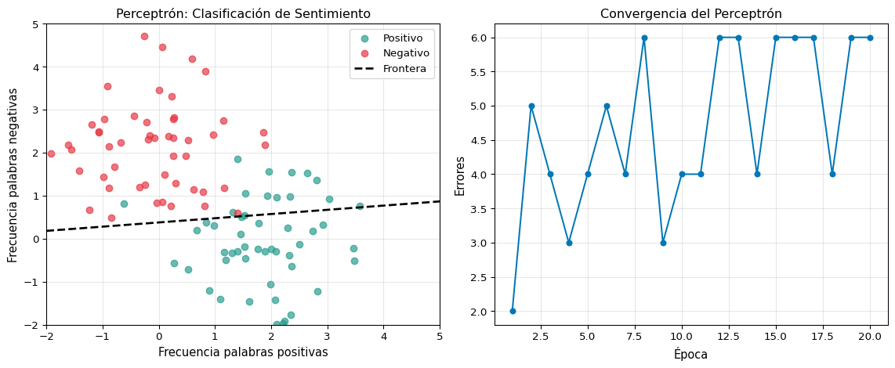
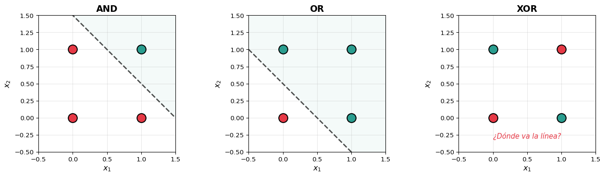
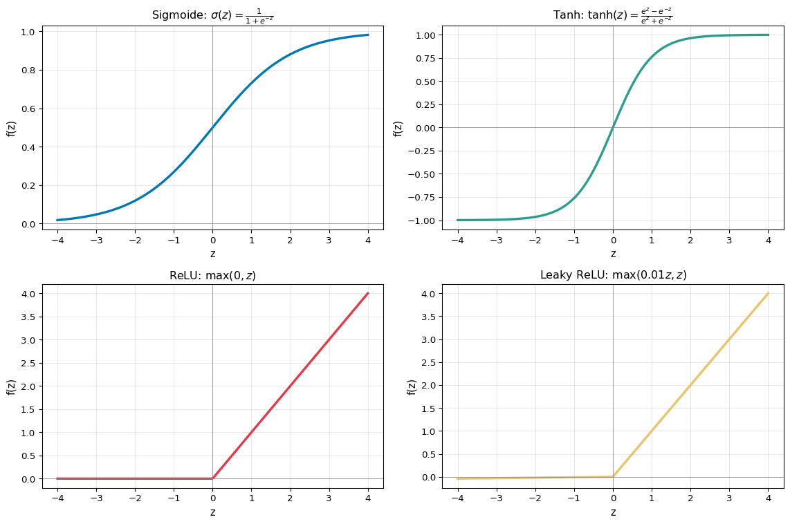
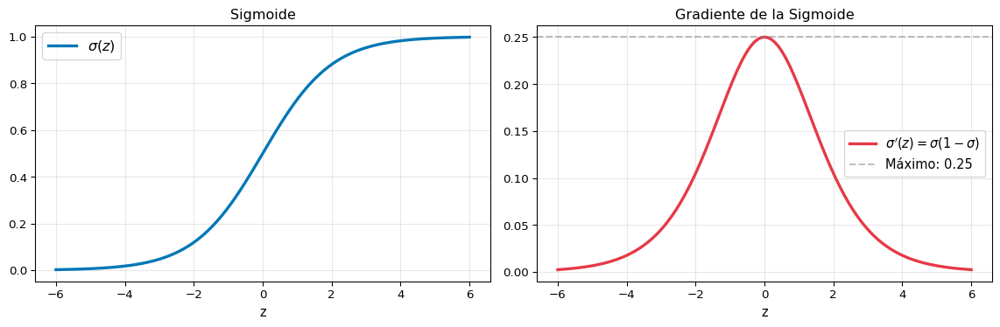
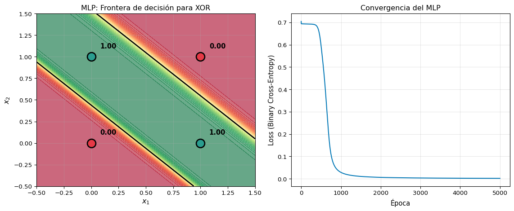
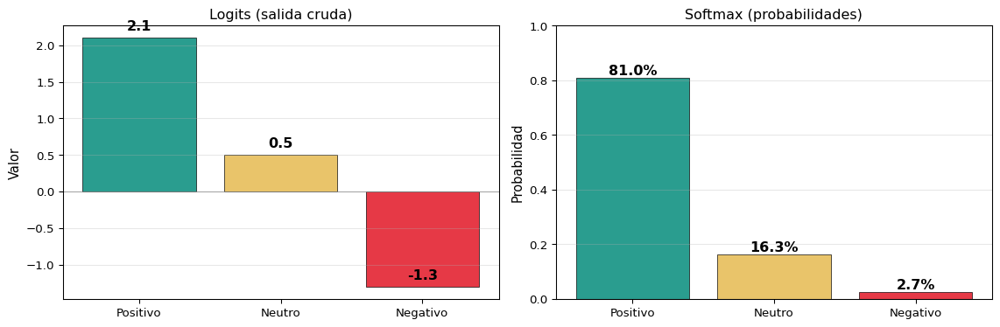

Code
flowchart LR
x1["x₁"] -->|w₁| S["Σ + b"]
x2["x₂"] -->|w₂| S
x3["x₃"] -->|w₃| S
S --> F["f(z)"]
F --> Y["ŷ"]
style S fill:#0077b6,color:#fff
style F fill:#e63946,color:#fff
style Y fill:#2a9d8f,color:#fff
S1: Repaso de Perceptrones y Retropropagación
Universidad Católica Boliviana
2026-03-10
Primera Parte
Segunda Parte
| Herramienta | Limitación |
|---|---|
| BoW / TF-IDF | No captura orden ni semántica |
| Word2Vec / GloVe | Solo representan, no deciden |
| Regresión Logística | Fronteras lineales |
| N-gramas | Explosión combinatoria |
El Camino
Perceptrón → MLP → RNN → LSTM → Transformer → BERT → GPT
Hoy cubrimos los primeros dos pasos de este camino.
La “fuerza” de cada sinapsis es lo que el cerebro ajusta al aprender.
Los pesos \(w_i\) y el sesgo \(b\) son lo que el modelo ajusta al aprender.
Cuidado con la analogía
Las redes neuronales artificiales están inspiradas en el cerebro, pero son una simplificación extrema. No pretenden modelar el cerebro real.
El modelo neuronal más simple: una sola neurona que toma una decisión binaria.
\[\hat{y} = \begin{cases} 1 & \text{si } \vec{w} \cdot \vec{x} + b \geq 0 \\ 0 & \text{si } \vec{w} \cdot \vec{x} + b < 0 \end{cases}\]
flowchart LR
x1["x₁"] -->|w₁| S["Σ + b"]
x2["x₂"] -->|w₂| S
x3["x₃"] -->|w₃| S
S --> F["f(z)"]
F --> Y["ŷ"]
style S fill:#0077b6,color:#fff
style F fill:#e63946,color:#fff
style Y fill:#2a9d8f,color:#fff
Para cada ejemplo \((x, y)\) con tasa de aprendizaje \(\eta\):
\[w_i \leftarrow w_i + \eta \cdot (y - \hat{y}) \cdot x_i\]
\[b \leftarrow b + \eta \cdot (y - \hat{y})\]
import numpy as np
import matplotlib.pyplot as plt
np.random.seed(42)
# Datos linealmente separables: ¿sentimiento positivo o negativo?
# Simulamos: x1 = frecuencia de palabras positivas, x2 = frecuencia de palabras negativas
n = 50
positivos = np.random.randn(n, 2) + [2, 0] # cluster positivo
negativos = np.random.randn(n, 2) + [0, 2] # cluster negativo
X = np.vstack([positivos, negativos])
y = np.array([1]*n + [0]*n)
# Perceptrón desde cero
w = np.zeros(2)
b = 0.0
eta = 0.1
errores_por_epoca = []
for epoca in range(20):
errores = 0
for i in range(len(X)):
z = np.dot(w, X[i]) + b
y_hat = 1 if z >= 0 else 0
error = y[i] - y_hat
w += eta * error * X[i]
b += eta * error
if error != 0:
errores += 1
errores_por_epoca.append(errores)
fig, axes = plt.subplots(1, 2, figsize=(12, 5))
# Frontera de decisión
ax = axes[0]
ax.scatter(positivos[:, 0], positivos[:, 1], c='#2a9d8f', label='Positivo', s=40, alpha=0.7)
ax.scatter(negativos[:, 0], negativos[:, 1], c='#e63946', label='Negativo', s=40, alpha=0.7)
x_line = np.linspace(-2, 5, 100)
if w[1] != 0:
y_line = -(w[0] * x_line + b) / w[1]
ax.plot(x_line, y_line, 'k--', linewidth=2, label='Frontera')
ax.set_xlabel('Frecuencia palabras positivas', fontsize=11)
ax.set_ylabel('Frecuencia palabras negativas', fontsize=11)
ax.set_title('Perceptrón: Clasificación de Sentimiento', fontsize=12)
ax.legend(fontsize=10)
ax.grid(True, alpha=0.3)
ax.set_xlim(-2, 5)
ax.set_ylim(-2, 5)
# Convergencia
ax = axes[1]
ax.plot(range(1, 21), errores_por_epoca, 'o-', color='#0077b6', markersize=5)
ax.set_xlabel('Época', fontsize=11)
ax.set_ylabel('Errores', fontsize=11)
ax.set_title('Convergencia del Perceptrón', fontsize=12)
ax.grid(True, alpha=0.3)
plt.tight_layout()
plt.show()
print(f"Pesos finales: w = [{w[0]:.3f}, {w[1]:.3f}], b = {b:.3f}")
print(f"Errores finales: {errores_por_epoca[-1]}")Pesos finales: w = [0.052, -0.529], b = 0.200
Errores finales: 6
| \(x_1\) | \(x_2\) | AND |
|---|---|---|
| 0 | 0 | 0 |
| 0 | 1 | 0 |
| 1 | 0 | 0 |
| 1 | 1 | 1 |
| \(x_1\) | \(x_2\) | OR |
|---|---|---|
| 0 | 0 | 0 |
| 0 | 1 | 1 |
| 1 | 0 | 1 |
| 1 | 1 | 1 |
| \(x_1\) | \(x_2\) | XOR |
|---|---|---|
| 0 | 0 | 0 |
| 0 | 1 | 1 |
| 1 | 0 | 1 |
| 1 | 1 | 0 |
No existe ninguna línea recta que separe las clases.
fig, axes = plt.subplots(1, 3, figsize=(14, 4))
gates = {
'AND': ([0,0,1,1], [0,1,0,1], [0,0,0,1]),
'OR': ([0,0,1,1], [0,1,0,1], [0,1,1,1]),
'XOR': ([0,0,1,1], [0,1,0,1], [0,1,1,0]),
}
colores_gate = {0: '#e63946', 1: '#2a9d8f'}
for ax, (nombre, (x1, x2, y_gate)) in zip(axes, gates.items()):
for i in range(4):
ax.scatter(x1[i], x2[i], c=colores_gate[y_gate[i]],
s=200, zorder=5, edgecolors='black', linewidth=1.5)
ax.annotate(str(y_gate[i]), (x1[i], x2[i]),
fontsize=14, fontweight='bold', ha='center', va='center',
color='white')
if nombre != 'XOR':
xx = np.linspace(-0.5, 1.5, 100)
if nombre == 'AND':
yy = 1.5 - xx # w1=1, w2=1, b=-1.5
else:
yy = 0.5 - xx # w1=1, w2=1, b=-0.5
ax.plot(xx, yy, 'k--', linewidth=2, alpha=0.7)
ax.fill_between(xx, yy, 2, alpha=0.05, color='#2a9d8f')
else:
ax.text(0.5, -0.3, '¿Dónde va la línea?', ha='center',
fontsize=11, style='italic', color='#e63946')
ax.set_xlim(-0.5, 1.5)
ax.set_ylim(-0.5, 1.5)
ax.set_xlabel('$x_1$', fontsize=12)
ax.set_ylabel('$x_2$', fontsize=12)
ax.set_title(nombre, fontsize=14, fontweight='bold')
ax.grid(True, alpha=0.3)
ax.set_aspect('equal')
plt.tight_layout()
plt.show()
La Crisis del Perceptrón (Minsky & Papert, 1969)
Demostraron que un perceptrón no puede resolver XOR y que las limitaciones lineales son fundamentales. Esto causó el primer “invierno” de la IA (~1970-1986).
La solución: apilar perceptrones en múltiples capas → redes neuronales profundas.
Sin funciones de activación no lineales, apilar capas es inútil:
\[\text{Capa 1: } \vec{h} = W_1 \vec{x} + \vec{b}_1\] \[\text{Capa 2: } \vec{y} = W_2 \vec{h} + \vec{b}_2\]
Sustituyendo:
\[\vec{y} = W_2 (W_1 \vec{x} + \vec{b}_1) + \vec{b}_2 = \underbrace{(W_2 W_1)}_{\tilde{W}} \vec{x} + \underbrace{(W_2 \vec{b}_1 + \vec{b}_2)}_{\tilde{\vec{b}}}\]
¡Dos capas lineales = una sola capa lineal! Necesitamos no linealidad entre capas.
x = np.linspace(-4, 4, 200)
# Funciones de activación
sigmoid = 1 / (1 + np.exp(-x))
tanh_vals = np.tanh(x)
relu = np.maximum(0, x)
leaky_relu = np.where(x > 0, x, 0.01 * x)
fig, axes = plt.subplots(2, 2, figsize=(12, 8))
configs = [
(axes[0,0], sigmoid, 'Sigmoide: $\\sigma(z) = \\frac{1}{1+e^{-z}}$', '#0077b6'),
(axes[0,1], tanh_vals, 'Tanh: $\\tanh(z) = \\frac{e^z - e^{-z}}{e^z + e^{-z}}$', '#2a9d8f'),
(axes[1,0], relu, 'ReLU: $\\max(0, z)$', '#e63946'),
(axes[1,1], leaky_relu, 'Leaky ReLU: $\\max(0.01z, z)$', '#e9c46a'),
]
for ax, y_vals, titulo, color in configs:
ax.plot(x, y_vals, linewidth=2.5, color=color)
ax.axhline(y=0, color='gray', linewidth=0.5)
ax.axvline(x=0, color='gray', linewidth=0.5)
ax.set_title(titulo, fontsize=12)
ax.grid(True, alpha=0.3)
ax.set_xlabel('z', fontsize=11)
ax.set_ylabel('f(z)', fontsize=11)
plt.tight_layout()
plt.show()
| Función | Rango | Derivada | Problema |
|---|---|---|---|
| Sigmoide | \((0, 1)\) | \(\sigma(1-\sigma)\), máx 0.25 | Gradient vanishing |
| Tanh | \((-1, 1)\) | \(1 - \tanh^2\), máx 1.0 | Gradient vanishing |
| ReLU | \([0, \infty)\) | 0 ó 1 | “Neuronas muertas” |
| Leaky ReLU | \((-\infty, \infty)\) | 0.01 ó 1 | ✅ Poca desventaja |
En la práctica
¿Por qué la sigmoide causa “gradientes que desaparecen”?
x = np.linspace(-6, 6, 200)
sig = 1 / (1 + np.exp(-x))
sig_grad = sig * (1 - sig)
fig, axes = plt.subplots(1, 2, figsize=(12, 4))
ax = axes[0]
ax.plot(x, sig, linewidth=2.5, color='#0077b6', label='$\\sigma(z)$')
ax.set_title('Sigmoide', fontsize=12)
ax.legend(fontsize=12)
ax.grid(True, alpha=0.3)
ax.set_xlabel('z', fontsize=11)
ax = axes[1]
ax.plot(x, sig_grad, linewidth=2.5, color='#e63946', label="$\\sigma'(z) = \\sigma(1-\\sigma)$")
ax.axhline(y=0.25, color='gray', linestyle='--', alpha=0.5, label='Máximo: 0.25')
ax.set_title('Gradiente de la Sigmoide', fontsize=12)
ax.legend(fontsize=11)
ax.grid(True, alpha=0.3)
ax.set_xlabel('z', fontsize=11)
plt.tight_layout()
plt.show()
Problema de saturación
Cuando \(|z|\) es grande, \(\sigma'(z) \approx 0\). En una red profunda, multiplicar muchos gradientes pequeños (\(< 0.25\)) → el gradiente se desvanece exponencialmente en las capas más tempranas.
Un MLP apila múltiples capas de neuronas con activaciones no lineales:
flowchart LR
subgraph Entrada ["Capa de Entrada"]
x1["x₁"]
x2["x₂"]
x3["x₃"]
end
subgraph Oculta1 ["Capa Oculta 1"]
h1["h₁"]
h2["h₂"]
h3["h₃"]
h4["h₄"]
end
subgraph Oculta2 ["Capa Oculta 2"]
g1["g₁"]
g2["g₂"]
end
subgraph Salida ["Capa de Salida"]
y1["ŷ"]
end
x1 --> h1 & h2 & h3 & h4
x2 --> h1 & h2 & h3 & h4
x3 --> h1 & h2 & h3 & h4
h1 --> g1 & g2
h2 --> g1 & g2
h3 --> g1 & g2
h4 --> g1 & g2
g1 --> y1
g2 --> y1
style Entrada fill:#cfe2ff,stroke:#0077b6
style Oculta1 fill:#90e0ef,stroke:#0077b6
style Oculta2 fill:#00b4d8,stroke:#023e8a,color:#fff
style Salida fill:#0077b6,stroke:#023e8a,color:#fffflowchart LR
subgraph Entrada ["Capa de Entrada"]
x1["x₁"]
x2["x₂"]
x3["x₃"]
end
subgraph Oculta1 ["Capa Oculta 1"]
h1["h₁"]
h2["h₂"]
h3["h₃"]
h4["h₄"]
end
subgraph Oculta2 ["Capa Oculta 2"]
g1["g₁"]
g2["g₂"]
end
subgraph Salida ["Capa de Salida"]
y1["ŷ"]
end
x1 --> h1 & h2 & h3 & h4
x2 --> h1 & h2 & h3 & h4
x3 --> h1 & h2 & h3 & h4
h1 --> g1 & g2
h2 --> g1 & g2
h3 --> g1 & g2
h4 --> g1 & g2
g1 --> y1
g2 --> y1
style Entrada fill:#cfe2ff,stroke:#0077b6
style Oculta1 fill:#90e0ef,stroke:#0077b6
style Oculta2 fill:#00b4d8,stroke:#023e8a,color:#fff
style Salida fill:#0077b6,stroke:#023e8a,color:#fff
\[\vec{h}^{(1)} = f\left(W^{(1)} \vec{x} + \vec{b}^{(1)}\right)\] \[\vec{h}^{(2)} = f\left(W^{(2)} \vec{h}^{(1)} + \vec{b}^{(2)}\right)\] \[\hat{y} = \sigma\left(\vec{w}^{(3)} \cdot \vec{h}^{(2)} + b^{(3)}\right)\]
. . .
| Componente | Dimensión | Ejemplo |
|---|---|---|
| \(\vec{x}\) (entrada) | \(n \times 1\) | \(3 \times 1\) |
| \(W^{(1)}\) | \(d_1 \times n\) | \(4 \times 3\) |
| \(\vec{h}^{(1)}\) | \(d_1 \times 1\) | \(4 \times 1\) |
| \(W^{(2)}\) | \(d_2 \times d_1\) | \(2 \times 4\) |
| \(\vec{h}^{(2)}\) | \(d_2 \times 1\) | \(2 \times 1\) |
| \(\vec{w}^{(3)}\) | \(1 \times d_2\) | \(1 \times 2\) |
. . .
Parámetros totales
En este ejemplo: \((4 \times 3 + 4) + (2 \times 4 + 2) + (1 \times 2 + 1) = 16 + 10 + 3 = 29\) parámetros.
# MLP para XOR — desde cero con NumPy
X_xor = np.array([[0,0], [0,1], [1,0], [1,1]])
y_xor = np.array([[0], [1], [1], [0]])
np.random.seed(42)
# Arquitectura: 2 → 4 → 1
W1 = np.random.randn(2, 4) * 0.5
b1 = np.zeros((1, 4))
W2 = np.random.randn(4, 1) * 0.5
b2 = np.zeros((1, 1))
def sigmoid(z):
return 1 / (1 + np.exp(-z))
eta = 1.0
losses = []
for epoca in range(5000):
# Forward
z1 = X_xor @ W1 + b1
h1 = sigmoid(z1)
z2 = h1 @ W2 + b2
y_hat = sigmoid(z2)
# Loss (binary cross-entropy)
loss = -np.mean(y_xor * np.log(y_hat + 1e-8) + (1 - y_xor) * np.log(1 - y_hat + 1e-8))
losses.append(loss)
# Backward
dz2 = y_hat - y_xor # (4, 1)
dW2 = h1.T @ dz2 / 4 # (4, 1)
db2 = np.mean(dz2, axis=0, keepdims=True) # (1, 1)
dh1 = dz2 @ W2.T # (4, 4)
dz1 = dh1 * h1 * (1 - h1) # (4, 4)
dW1 = X_xor.T @ dz1 / 4 # (2, 4)
db1 = np.mean(dz1, axis=0, keepdims=True) # (1, 4)
# Update
W2 -= eta * dW2
b2 -= eta * db2
W1 -= eta * dW1
b1 -= eta * db1
# Resultados
fig, axes = plt.subplots(1, 2, figsize=(12, 5))
# Frontera de decisión
ax = axes[0]
xx, yy = np.meshgrid(np.linspace(-0.5, 1.5, 200), np.linspace(-0.5, 1.5, 200))
grid = np.c_[xx.ravel(), yy.ravel()]
h_grid = sigmoid(grid @ W1 + b1)
z_grid = sigmoid(h_grid @ W2 + b2).reshape(xx.shape)
ax.contourf(xx, yy, z_grid, levels=50, cmap='RdYlGn', alpha=0.6)
ax.contour(xx, yy, z_grid, levels=[0.5], colors='black', linewidths=2)
for i in range(4):
color = '#2a9d8f' if y_xor[i][0] == 1 else '#e63946'
ax.scatter(X_xor[i, 0], X_xor[i, 1], c=color, s=200,
edgecolors='black', linewidth=2, zorder=5)
ax.annotate(f'{y_hat[i][0]:.2f}', (X_xor[i,0]+0.08, X_xor[i,1]+0.1),
fontsize=11, fontweight='bold')
ax.set_xlabel('$x_1$', fontsize=12)
ax.set_ylabel('$x_2$', fontsize=12)
ax.set_title('MLP: Frontera de decisión para XOR', fontsize=12)
ax.grid(True, alpha=0.3)
# Convergencia
ax = axes[1]
ax.plot(losses, color='#0077b6', linewidth=1.5)
ax.set_xlabel('Época', fontsize=11)
ax.set_ylabel('Loss (Binary Cross-Entropy)', fontsize=11)
ax.set_title('Convergencia del MLP', fontsize=12)
ax.grid(True, alpha=0.3)
plt.tight_layout()
plt.show()
print(f"Predicciones finales:")
for i in range(4):
print(f" x={X_xor[i]} → ŷ={y_hat[i][0]:.4f} (esperado: {y_xor[i][0]})")Predicciones finales:
x=[0 0] → ŷ=0.0024 (esperado: 0)
x=[0 1] → ŷ=0.9984 (esperado: 1)
x=[1 0] → ŷ=0.9984 (esperado: 1)
x=[1 1] → ŷ=0.0013 (esperado: 0)
Lección clave
La frontera de decisión del MLP es no lineal — puede separar las clases de XOR. Cada capa oculta transforma el espacio de entrada en un espacio donde los datos sí son linealmente separables.
Retropropagación (Backpropagation) calcula el gradiente de la pérdida con respecto a cada peso de la red, usando la regla de la cadena de forma eficiente.
Una red con \(L\) capas y función de pérdida \(\mathcal{L}\):
\[\frac{\partial \mathcal{L}}{\partial W^{(1)}} = \frac{\partial \mathcal{L}}{\partial \hat{y}} \cdot \frac{\partial \hat{y}}{\partial h^{(L-1)}} \cdot \frac{\partial h^{(L-1)}}{\partial h^{(L-2)}} \cdots \frac{\partial h^{(2)}}{\partial h^{(1)}} \cdot \frac{\partial h^{(1)}}{\partial W^{(1)}}\]
. . .
La regla de la cadena descompone el problema en gradientes locales que se propagan hacia atrás capa por capa.
\[z = w_1 x_1 + w_2 x_2 + b\] \[h = \sigma(z)\] \[\hat{y} = h\] \[\mathcal{L} = -[y \log(\hat{y}) + (1-y)\log(1-\hat{y})]\]
. . .
\[\frac{\partial \mathcal{L}}{\partial w_1} = \underbrace{\frac{\partial \mathcal{L}}{\partial \hat{y}}}_{\text{pérdida}} \cdot \underbrace{\frac{\partial \hat{y}}{\partial z}}_{\text{activación}} \cdot \underbrace{\frac{\partial z}{\partial w_1}}_{\text{lineal}}\]
. . .
Calculando cada parte:
\[\frac{\partial \mathcal{L}}{\partial \hat{y}} = \frac{\hat{y} - y}{\hat{y}(1-\hat{y})}, \quad \frac{\partial \hat{y}}{\partial z} = \sigma(z)(1-\sigma(z)), \quad \frac{\partial z}{\partial w_1} = x_1\]
. . .
Simplificando:
\[\frac{\partial \mathcal{L}}{\partial w_1} = (\hat{y} - y) \cdot x_1\]
Backprop opera sobre un grafo computacional — cada nodo calcula su gradiente local:
flowchart LR
x["x"] --> mul["×"]
w["w"] --> mul
mul --> add["Σ"]
b["b"] --> add
add --> sig["σ"]
sig --> loss["L"]
y["y"] --> loss
loss -.->|"∂L/∂σ"| sig
sig -.->|"∂σ/∂z · ∂L/∂σ"| add
add -.->|"∂z/∂w · ..."| mul
style loss fill:#e63946,color:#fff
style sig fill:#0077b6,color:#fff
style add fill:#90e0ef,stroke:#0077b6
style mul fill:#90e0ef,stroke:#0077b6flowchart LR
x["x"] --> mul["×"]
w["w"] --> mul
mul --> add["Σ"]
b["b"] --> add
add --> sig["σ"]
sig --> loss["L"]
y["y"] --> loss
loss -.->|"∂L/∂σ"| sig
sig -.->|"∂σ/∂z · ∂L/∂σ"| add
add -.->|"∂z/∂w · ..."| mul
style loss fill:#e63946,color:#fff
style sig fill:#0077b6,color:#fff
style add fill:#90e0ef,stroke:#0077b6
style mul fill:#90e0ef,stroke:#0077b6
Frameworks modernos
PyTorch y TensorFlow construyen este grafo automáticamente (autograd). Nosotros solo definimos el forward pass; el backward se calcula solo. Pero entender cómo funciona es fundamental.
# Backprop manual — red con 1 neurona oculta
# Entrada: x = [1.0, 0.5], y = 1 (spam)
x = np.array([1.0, 0.5])
y = 1.0
# Pesos iniciales (aleatorios)
w = np.array([0.3, -0.2])
b = 0.1
# --- Forward Pass ---
z = np.dot(w, x) + b # z = 0.3*1 + (-0.2)*0.5 + 0.1 = 0.3
h = 1 / (1 + np.exp(-z)) # σ(0.3) ≈ 0.574
y_hat = h
loss = -(y * np.log(y_hat) + (1-y) * np.log(1-y_hat))
print("=== Forward Pass ===")
print(f"z = w·x + b = {w[0]}×{x[0]} + {w[1]}×{x[1]} + {b} = {z:.3f}")
print(f"h = σ({z:.3f}) = {h:.4f}")
print(f"Loss = {loss:.4f}")
# --- Backward Pass ---
dL_dy = (y_hat - y) # ∂L/∂ŷ simplificado
dL_dw = dL_dy * x # ∂L/∂w = (ŷ - y) · x
dL_db = dL_dy # ∂L/∂b = (ŷ - y)
print("\n=== Backward Pass ===")
print(f"∂L/∂ŷ = ŷ - y = {y_hat:.4f} - {y} = {dL_dy:.4f}")
print(f"∂L/∂w₁ = {dL_dy:.4f} × {x[0]} = {dL_dw[0]:.4f}")
print(f"∂L/∂w₂ = {dL_dy:.4f} × {x[1]} = {dL_dw[1]:.4f}")
print(f"∂L/∂b = {dL_db:.4f}")
# --- Update ---
eta = 0.5
w_new = w - eta * dL_dw
b_new = b - eta * dL_db
print(f"\n=== Update (η={eta}) ===")
print(f"w₁: {w[0]:.3f} → {w_new[0]:.4f}")
print(f"w₂: {w[1]:.3f} → {w_new[1]:.4f}")
print(f"b: {b:.3f} → {b_new:.4f}")
# Verificar que la loss baja
z_new = np.dot(w_new, x) + b_new
h_new = 1 / (1 + np.exp(-z_new))
loss_new = -(y * np.log(h_new) + (1-y) * np.log(1-h_new))
print(f"\nLoss antes: {loss:.4f} → Loss después: {loss_new:.4f} ({'↓ Bajó!' if loss_new < loss else '↑ Subió'})")=== Forward Pass ===
z = w·x + b = 0.3×1.0 + -0.2×0.5 + 0.1 = 0.300
h = σ(0.300) = 0.5744
Loss = 0.5544
=== Backward Pass ===
∂L/∂ŷ = ŷ - y = 0.5744 - 1.0 = -0.4256
∂L/∂w₁ = -0.4256 × 1.0 = -0.4256
∂L/∂w₂ = -0.4256 × 0.5 = -0.2128
∂L/∂b = -0.4256
=== Update (η=0.5) ===
w₁: 0.300 → 0.5128
w₂: -0.200 → -0.0936
b: 0.100 → 0.3128
Loss antes: 0.5544 → Loss después: 0.3777 (↓ Bajó!)Binary Cross-Entropy (BCE):
\[\mathcal{L} = -\frac{1}{N}\sum_i \left[y_i \log(\hat{y}_i) + (1-y_i)\log(1-\hat{y}_i)\right]\]
Capa de salida: sigmoide
Cross-Entropy:
\[\mathcal{L} = -\frac{1}{N}\sum_i \sum_c y_{i,c} \log(\hat{y}_{i,c})\]
Capa de salida: softmax
\[\text{softmax}(z_j) = \frac{e^{z_j}}{\sum_k e^{z_k}}\]
Mean Squared Error (MSE):
\[\mathcal{L} = \frac{1}{N}\sum_i (y_i - \hat{y}_i)^2\]
# Ejemplo: clasificación de sentimiento en 3 clases
logits = np.array([2.1, 0.5, -1.3]) # salida de la última capa
clases = ['Positivo', 'Neutro', 'Negativo']
# Softmax
exp_logits = np.exp(logits - np.max(logits)) # truco de estabilidad numérica
softmax_probs = exp_logits / exp_logits.sum()
fig, axes = plt.subplots(1, 2, figsize=(12, 4))
# Logits (valores crudos)
ax = axes[0]
colors = ['#2a9d8f', '#e9c46a', '#e63946']
bars = ax.bar(clases, logits, color=colors, edgecolor='black', linewidth=0.5)
for bar, val in zip(bars, logits):
ax.text(bar.get_x() + bar.get_width()/2., bar.get_height() + 0.1,
f'{val:.1f}', ha='center', fontweight='bold', fontsize=12)
ax.set_title('Logits (salida cruda)', fontsize=12)
ax.set_ylabel('Valor', fontsize=11)
ax.axhline(y=0, color='gray', linewidth=0.5)
ax.grid(True, alpha=0.3, axis='y')
# Softmax
ax = axes[1]
bars = ax.bar(clases, softmax_probs, color=colors, edgecolor='black', linewidth=0.5)
for bar, val in zip(bars, softmax_probs):
ax.text(bar.get_x() + bar.get_width()/2., bar.get_height() + 0.01,
f'{val:.1%}', ha='center', fontweight='bold', fontsize=12)
ax.set_title('Softmax (probabilidades)', fontsize=12)
ax.set_ylabel('Probabilidad', fontsize=11)
ax.set_ylim(0, 1)
ax.grid(True, alpha=0.3, axis='y')
plt.tight_layout()
plt.show()
print(f"Logits: {logits} → Softmax: [{', '.join(f'{p:.4f}' for p in softmax_probs)}]")
print(f"Suma de probabilidades: {softmax_probs.sum():.4f}")Logits: [ 2.1 0.5 -1.3] → Softmax: [0.8095, 0.1634, 0.0270]
Suma de probabilidades: 1.0000
¿Cómo combinar lo que ya sabemos (embeddings) con lo que aprendimos hoy?
flowchart LR
subgraph Input ["Entrada"]
T["Texto: 'película genial'"]
end
subgraph Embed ["Embeddings"]
E1["vec(película)"]
E2["vec(genial)"]
end
subgraph Pool ["Pooling"]
P["Promedio"]
end
subgraph MLP ["Red Neuronal"]
H1["Capa Oculta<br>ReLU"]
H2["Capa de Salida<br>Softmax"]
end
subgraph Out ["Predicción"]
Y["😊 Positivo: 92%"]
end
T --> E1 & E2
E1 & E2 --> P
P --> H1 --> H2 --> Y
style Input fill:#cfe2ff
style Embed fill:#90e0ef
style Pool fill:#00b4d8,color:#fff
style MLP fill:#0077b6,color:#fff
style Out fill:#2a9d8f,color:#fffflowchart LR
subgraph Input ["Entrada"]
T["Texto: 'película genial'"]
end
subgraph Embed ["Embeddings"]
E1["vec(película)"]
E2["vec(genial)"]
end
subgraph Pool ["Pooling"]
P["Promedio"]
end
subgraph MLP ["Red Neuronal"]
H1["Capa Oculta<br>ReLU"]
H2["Capa de Salida<br>Softmax"]
end
subgraph Out ["Predicción"]
Y["😊 Positivo: 92%"]
end
T --> E1 & E2
E1 & E2 --> P
P --> H1 --> H2 --> Y
style Input fill:#cfe2ff
style Embed fill:#90e0ef
style Pool fill:#00b4d8,color:#fff
style MLP fill:#0077b6,color:#fff
style Out fill:#2a9d8f,color:#fff
from gensim.models import Word2Vec
# Mini corpus de entrenamiento
textos = [
("la película es genial y divertida", 1),
("me encantó la actuación del actor", 1),
("la historia es aburrida y lenta", 0),
("pésima película no la recomiendo", 0),
("una obra maestra del cine", 1),
("terrible actuación muy mala", 0),
("excelente drama con buen final", 1),
("no vale la pena verla", 0),
]
# Entrenar embeddings
corpus_tokens = [t.split() for t, _ in textos]
w2v = Word2Vec(sentences=corpus_tokens, vector_size=20, window=3,
min_count=1, sg=1, epochs=200, seed=42)
# Vectorizar textos: promedio de embeddings
def texto_a_vector(texto, modelo, dim=20):
palabras = texto.split()
vecs = [modelo.wv[w] for w in palabras if w in modelo.wv]
if not vecs:
return np.zeros(dim)
return np.mean(vecs, axis=0)
X = np.array([texto_a_vector(t, w2v) for t, _ in textos])
y = np.array([[label] for _, label in textos])
# MLP: 20 → 8 → 1
np.random.seed(42)
W1 = np.random.randn(20, 8) * 0.3
b1 = np.zeros((1, 8))
W2 = np.random.randn(8, 1) * 0.3
b2 = np.zeros((1, 1))
def sigmoid(z):
return 1 / (1 + np.exp(-np.clip(z, -500, 500)))
def relu(z):
return np.maximum(0, z)
def relu_grad(z):
return (z > 0).astype(float)
# Entrenar
eta = 0.05
losses = []
for epoca in range(500):
# Forward
z1 = X @ W1 + b1
h1 = relu(z1)
z2 = h1 @ W2 + b2
y_hat = sigmoid(z2)
loss = -np.mean(y * np.log(y_hat + 1e-8) + (1-y) * np.log(1-y_hat + 1e-8))
losses.append(loss)
# Backward
m = len(X)
dz2 = y_hat - y
dW2 = h1.T @ dz2 / m
db2 = np.mean(dz2, axis=0, keepdims=True)
dh1 = dz2 @ W2.T
dz1 = dh1 * relu_grad(z1)
dW1 = X.T @ dz1 / m
db1 = np.mean(dz1, axis=0, keepdims=True)
W2 -= eta * dW2
b2 -= eta * db2
W1 -= eta * dW1
b1 -= eta * db1
# Predicciones finales
z1_f = X @ W1 + b1
h1_f = relu(z1_f)
z2_f = h1_f @ W2 + b2
y_pred = sigmoid(z2_f)
print("Resultados del clasificador MLP:")
print(f"{'Texto':<45} {'Real':>5} {'Pred':>6}")
print("=" * 60)
for i, (texto, label) in enumerate(textos):
emoji = '✅' if round(y_pred[i][0]) == label else '❌'
print(f"{texto:<45} {label:>5} {y_pred[i][0]:>6.3f} {emoji}")
print(f"\nLoss final: {losses[-1]:.4f}")
accuracy = np.mean(np.round(y_pred.flatten()) == y.flatten())
print(f"Accuracy: {accuracy:.0%}")Resultados del clasificador MLP:
Texto Real Pred
============================================================
la película es genial y divertida 1 0.498 ❌
me encantó la actuación del actor 1 0.500 ✅
la historia es aburrida y lenta 0 0.499 ✅
pésima película no la recomiendo 0 0.498 ✅
una obra maestra del cine 1 0.499 ❌
terrible actuación muy mala 0 0.503 ❌
excelente drama con buen final 1 0.499 ❌
no vale la pena verla 0 0.503 ❌
Loss final: 0.6945
Accuracy: 38%| Concepto | Fórmula |
|---|---|
| Perceptrón | \(\hat{y} = f(\vec{w} \cdot \vec{x} + b)\) |
| ReLU | \(f(z) = \max(0, z)\) |
| Sigmoide | \(\sigma(z) = \frac{1}{1 + e^{-z}}\) |
| Softmax | \(\text{softmax}(z_j) = \frac{e^{z_j}}{\sum_k e^{z_k}}\) |
| BCE | \(\mathcal{L} = -[y\log\hat{y} + (1-y)\log(1-\hat{y})]\) |
| Forward | \(\vec{h} = f(W\vec{x} + \vec{b})\) |
| Regla de la cadena | \(\frac{\partial \mathcal{L}}{\partial w} = \frac{\partial \mathcal{L}}{\partial \hat{y}} \cdot \frac{\partial \hat{y}}{\partial z} \cdot \frac{\partial z}{\partial w}\) |
| Actualización | \(w \leftarrow w - \eta \frac{\partial \mathcal{L}}{\partial w}\) |
S2: Perceptrones Multicapa para Clasificación de Texto
Lectura:
Preparación:
pip install torch¡Gracias!
📧 fsuarez@ucb.edu.bo
🔗 Materiales: github.com/fjsuarez/ucb-nlp
NLP y Análisis Semántico | Semana 5